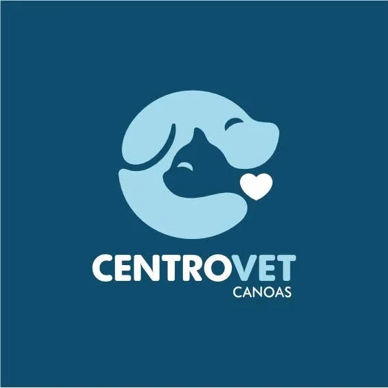
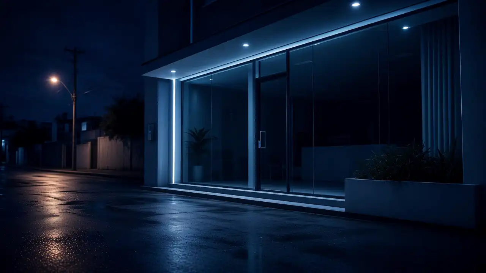

Recepção / acolhida
texto de exemplo — primeiro contato com a equipe do plantão.

Centro Vet Canoas
Primeiros 60 segundos
Confirme orientação e se deve deslocar agora. Plantão 24h · (51) 3939-8300.
Respiração, vômito, trauma, tempo desde o início — checklist ilustrativo para a ligação.
R. Napoleão Laureano, 431 — Centro, Canoas/RS.
Status do plantão
4,8★
343 avaliações
Funcionamento
24h
Todos os dias
Agora em Canoas
--:--
America/Sao_Paulo
Percurso da chegada
texto de exemplo — primeiro contato com a equipe do plantão.
texto de exemplo — priorização do caso clínico.
Urgência e atendimento clínico citados nas avaliações públicas.
Reviews descrevem boletins e fotinhos a cada plantão na internação.
Capacidade da clínica
24 horas
Atendimento veterinário contínuo — o posicionamento público da Centrovet.
Perguntar no telefoneCategoria pública da clínica.
Categoria pública da clínica.
Categoria pública da clínica.
Categoria pública da clínica.
Mencionada em avaliações com boletins por plantão.
Vozes do plantão
Trechos públicos de avaliações Google (espelho Exa Places, coleta 04/11/2026). Nota 4,8 · 343 avaliações.
“Minha experiência com o Centro Vet Canoas é de muita confiança e gratidão. Abraçaram não somente o caso de esporotricose do meu MiMinho, como NOS abraçaram… Não me importo de deslocar-me 20km… Obrigada”
“A Centrovet é uma clínica que atua com excelência nos atendimento de urgência e clínicos… Muito atenciosas na internação, com boletins e fotinhos a cada plantão…”
“Moro em POA, e a clínica fica em canoas… fazemos questão de levar nosso Ozzy sempre na Centrovet, pois o atendimento é o melhor que já vimos…”
Antes de sair
Centro Vet Canoas
R. Napoleão Laureano, 431 — Centro, Canoas/RS, 92010-190
(51) 3939-8300 · centrovetcanoas@gmail.com
WhatsApp citado em reviews; mobile dos posts FB (51) 99155-7170 — a confirmar se é o canal oficial.
Instagram @centrovetcanoas — citado em diretórios; não confirmado nesta coleta.
Mapa sob demanda — economiza dados.
FAQ de madrugada
Sim. Aberto 24 horas, todos os dias (fonte: Google/Exa Places).
Orientamos ligar antes de sair para receber orientação. (51) 3939-8300.
R. Napoleão Laureano, 431 — Centro, Canoas/RS, 92010-190.
Avaliações públicas descrevem internação com boletins e fotos a cada plantão. Confirme detalhes por telefone.
Reviews mencionam resposta no WhatsApp. Mobile dos posts FB: (51) 99155-7170 — a confirmar. Preferimos o telefone fixo confirmado: (51) 3939-8300.
Plantão 24h
Fale com o plantão da Centro Vet Canoas — urgência e clínica no Centro. texto de exemplo